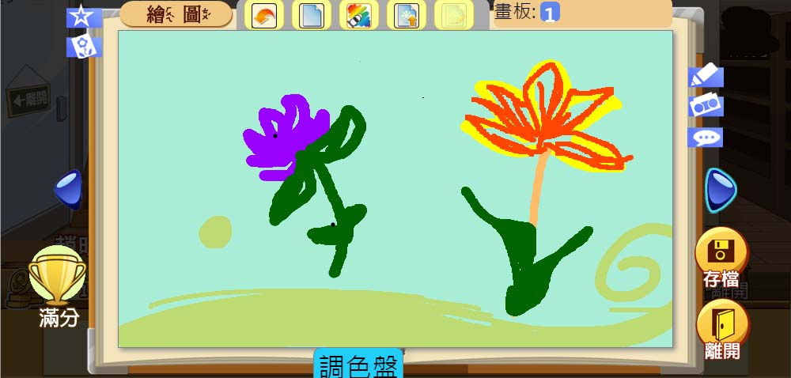

    <a id="shing_1" onClick="" style="position: absolute; left: 36px; top: 311px; width: 96px; height: 180px; cursor: pointer; display: none;" class = "shing"></a>
	<a onClick="take(1)" onMouseOver="shing(1,'block')" onMouseOut="shing(1,'none')" style="position:absolute; left:-20px; top:264px; cursor:pointer; line-height:40px;  width: 217px;text-align: center;" class = "text_1">老師給你的指導</a>
    
	
    <a id="shing_2" onClick="" style="position:absolute; left:295px; top:10px; width:343px; height:55px; cursor:pointer; display:none;" class = "shing"></a>
    <a onClick="take(2)" onMouseOver="shing(2,'block')" onMouseOut="shing(2,'none')" style="position:absolute; left:340px; top:62px; cursor:pointer; line-height:40px; text-align:center; width: 373px;" class = "text_1"> 回復上一步、清空畫布等等的功能</a>
    
    <a id="shing_3" onClick="" style="position:absolute; left:359px; top:431px; width:222px; height:67px; cursor:pointer; display:none;" class = "shing"></a>
    <a onClick="take(3)" onMouseOver="shing(3,'block')" onMouseOut="shing(3,'none')" style="position:absolute; left:315px; top:390px; cursor:pointer; line-height:40px; text-align:center; width: 288px;" class = "text_1"> 點選使用調色盤工具列</a>  
